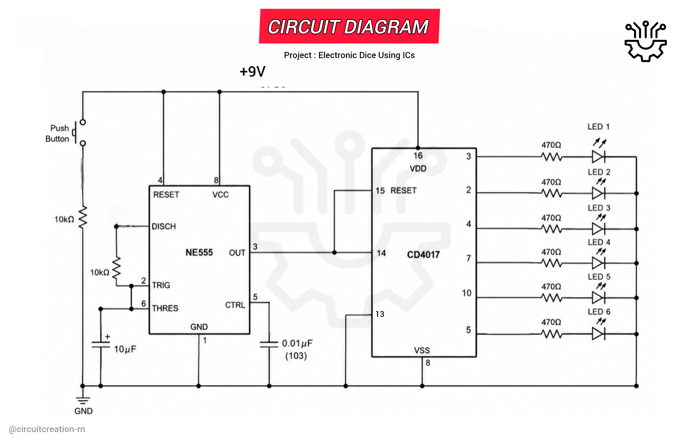

This Electronic Dice project uses an NE555 and a CD4017 to generate a random LED output. Pressing the push button makes the LEDs rotate rapidly, and releasing it stops the sequence on a random number. It is a beginner friendly electronics project that demonstrates timer circuits and digital counting without using Arduino.

NE555
Pin 1 → GND
Pin 8 → +VCC
Pin 4 → +VCC
CD4017
Pin 16 → +VCC
Pin 8 → GND
Pin 13 → GND
Connect NE555 Pin 2 directly to Pin 6.
10µF Capacitor
Positive → Pins 2 & 6
Negative → GND
10kΩ Resistor
Pin 7 → Pins 2 & 6
100kΩ Resistor
+VCC → Pin 7
103 (0.01µF) Capacitor
Pin 5 → GND
NE555 Pin 3 → CD4017 Pin 14 (Clock)
CD4017 Pin 5 (Q6) → Pin 15 (RESET)
This limits counting to six outputs.
Use one 470Ω resistor in series with each LED. Connect all LED negative terminals to GND.
One terminal → +VCC
Other terminal → NE555 Pin 4 (RESET)
Connect another 10kΩ resistor from NE555 Pin 4 (RESET) to GND.
The NE555 timer generates fast clock pulses that are sent to the CD4017 decade counter. Each clock pulse activates the next output, causing the LEDs to light one after another in rapid succession.
When the push button is released, the clock stops immediately, leaving one LED ON. The illuminated LED represents the randomly selected dice number.
When the push button is pressed, the NE555 timer continuously generates clock pulses that drive the CD4017 counter. The LEDs rotate rapidly, creating a rolling dice effect.
Releasing the button stops the counter instantly, leaving one LED illuminated to indicate the final dice result.
Check the NE555 timer connections and ensure Pin 3 is connected to Pin 14 of the CD4017.
Check the push button and verify that the clock signal is reaching the CD4017.
Yes. A fully charged 3.7V Li-ion battery works well for this project.
{kind=link}